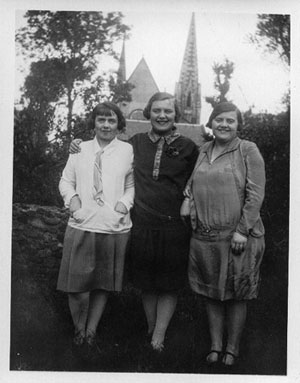

I
was born in Partick, Glasgow,
in No2 Kennedy Drive. I don’t remember living there, but
I remember the house because Uncle Willy
and Aunt Maggie moved in when we went to Renfrew
so we visited them until they went to Canada.
Betty, the
independent woman who would stride confidently to work ‘in
town’, a proper job, with a suit and a real salary. Went
to London all on her own to see the Coronation.
She lost her beau in the war, they said, and never married,
and maybe she did, but she liked a drink in the Hotel Alhambra
after work. And what a laugh! (The living speak of her laugh
even now, rattling down the decades.) Jean, always too sharp,
what was wrong with her? We never understood it.But
oh Ina (never Thomasina, she hated that) and she had a hard
life, with Uncle George dying so young and leaving her with
the boys. Old photographs of flapper dresses and badminton
matches, and later three small boys and a rough house in the
Campsies.

(My
Grandpa was a ship’s caulker in the ship
yards, he came from Kirkintilloch. He was a herbalist…he
used to roam the Campsie Hills collecting his herbs for all
his potions.)
But a rented house in a wee village out of town was what a young
widowed mother could afford. (Coal fires! A wooden toilet seat
and pull-chain flush! We Thatcher’s children though it
primitive, unnerving). And in spite of it all, Ina was the singer,
teaching us Vaudeville
songs that still electrify my stray neurons in odd moments.
Of course, until your Aunt
Mary put in an appearance
I had things all my own way, doting Aunts and Uncles. They took me out
a lot, taught me
all the songs
and dances. I remember learning to do the Charleston holding on to
the back of a chair.